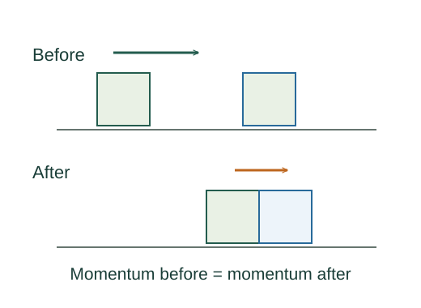

Derive impulse and momentum conservation
Impulse measures an interaction accumulated over time. Momentum conservation follows when the net external impulse on the chosen system vanishes.
What the symbols mean
𝐩: momentum of one particle; 𝐏: total system momentum; 𝐉: external impulse; all are vectors.
When this applies
Classical mechanics with a clearly chosen system. Internal Newtonian action–reaction forces cancel pairwise; include external impulses during the interval.
Developing the argument

Integrate the momentum law
Newton’s second law states that force is the rate of momentum change. Its time integral gives the momentum difference between endpoints.
A closer lookHow does an integral accumulate a changing force? ↗Add particles within a system
Forces between system particles appear as equal and opposite pairs, so they cancel when the momentum equations are added.
Set the external impulse to zero
With no net external impulse, total momentum before and after the event is equal. Individual particles can exchange large amounts of momentum.
Distinguish collision types
All isolated collisions conserve total momentum. Kinetic energy is conserved only for elastic collisions; a perfectly inelastic collision has the objects stick together.
A worked example
A 2 kg cart at 3 m/s sticks to a stationary 1 kg cart. Their shared velocity is 6/3 = 2 m/s. Kinetic energy falls from 9 J to 6 J.
Derivation behind this calculation ↗A point to keep straight
A zero net external force is sufficient, but zero total external impulse over the particular interval is the more general conservation condition.
Check the assumptions and derivation ↗